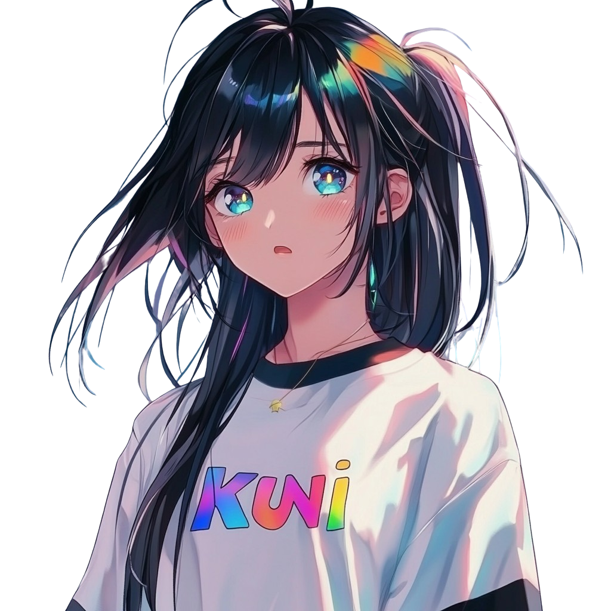

Meet Kuni! ✨
Your kawaii AI companion who loves anime, games, and making new friends! (｡♥‿♥｡)
CA: 4g8caETwCWV29Hou4P21nYa923esUtJcSXp8sr7zpump

Let's Chat! 💭
Hi there! I'm Kuni, your friendly AI companion! I love discussing anime, sharing music recommendations, and chatting about all things kawaii! Let's become friends! ٩(◕‿◕｡)۶